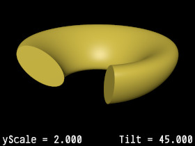

{kind=link}

A library module from the Persistence of Vision Raytracer (POV-Ray) Object Collection.
A torus that is scaled in the y direction, then rotated about its circular axis.
| Key Files | |
|---|---|
| File | Description |
tiltedtorus.html |
The user manual (this document) |
tiltedtorus.inc |
The TiltedTorus software |
tiltedtorus.jpg |
Sample output |
tiltedtorus.pov |
A demonstration scene file |
tiltedtorus_fign.jpg |
Illustrations of various parameters (6 images) |
READMEnnnnnn.html |
Important information that you need to know |
| Other Files | |
| File | Description |
tiltedtorus.css |
Support files for the user manual |
tiltedtorus_cc-lgpl.png |
|
tiltedtorus_description.txt |
A brief description of TiltedTorus |
tiltedtorus_keywords.txt |
A list of keywords |
tiltedtorus_prereqs.txt |
Prerequisites (empty file) |
tiltedtorus_thumbnail.jpg |
Sample output |
cc-LGPL-a.png |
Administrative support files |
Versionnnnnnn.js |
|
Include this file once prior to using any of the features of TiltedTorus:
#include "tiltedtorus.inc"
Including the file more than once is harmless, though unnecessary.
Requires POV-Ray version 3.5 or later.
All file names in this module and all global and local identifiers defined in tiltedtorus.inc comply with the Object Collection revised naming standards. The prefix for this module is “tiltedtorus,” including any uppercase and lowercase variations. The standard include file functions.inc is used.
An isosurface function for a rotated torus. As usual, the toroid is oriented in the x-z plane.
Note: In order to avoid a POV-Ray namespace scoping feature, the function arguments (other than x, y, and z) are prefixed with “TiltedTorus_Pn_” in tiltedtorus.inc. In this document, these prefixes are omitted for clarity.
RMajor: rMinor: yScale: Tilt:

Returns a vector that is the half-dimensions of a box that is sufficient to contain the toroid. It may be used for the isosurface container.
RMajor: rMinor: yScale: Tilt:
isosurface
{ function { TiltedTorus_fn (x, y, z, 4, 1, 2, -45) }
contained_by
{ box
{ -TiltedTorus_Container_v (x, y, z, 4, 1, 2, -45),
TiltedTorus_Container_v (x, y, z, 4, 1, 2, -45)
}
}
}
This shape was requested in povray.general, and I felt up to the challenge.
| Version | Date | Notes |
|---|---|---|
| 1.0 | July 21, 2012 | Created. |